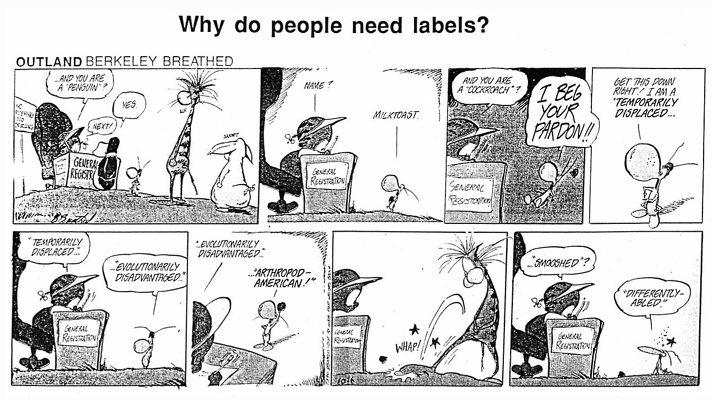

<HTML>

<HEAD>
<meta http-equiv="Content-Type" content="text/html; charset=utf-8">
<TITLE>Humor and stories for interpreters: The hazards of deafness</TITLE>
<META NAME="description" CONTENT="Humor about how being deaf can cause problems."><META NAME="keywords" CONTENT="ASL interpreting, sign language interpreting, humor, deafness, hazards">
</HEAD>
<BODY>
<BODY BACKGROUND="http://theinterpretersfriend.com/b-g.jpg">
<CENTER><H2>Humor and stories for interpreters: The hazards of deafness</H2>
<H3>David Bar-Tzur</H3>Links updated monthly with the help of <A HREF="http://www.linkalarm.com/">LinkAlarm</A>.
<P>
<P>(The image above is from <A HREF="http://www.deafology.com/products.htm">DEAFology 101</A>.)</CENTER><FONT SIZE="+1">

<P><A HREF="http://www.youtube.com/watch?v=HYZClMeQcOw">Jerry's deaf girlfriend in the restaraunt.</A>From "The Lip Reader", Seinfeld Season 7. Jerry takes George and his deaf girlfriend to a restaurant, where George gets an idea.

<P><A HREF="http://www.youtube.com/watch?v=Og1GqFWEXMs">Jerry's deaf girlfriend at a party.</A>From "The Lip Reader", Seinfeld Season 7. George needs to "borrow" Jerry's deaf girlfriend who has the ability of reading lips, in order to know what his ex is saying about him from the opposite side of a party.

<P>y grandmother has been influential with her humour. She was profoundly deaf and I used to write her notes, so I wouldn't have to yell. One day, we were having lunch at her little table. I had been doing the running around--setting the plates out, arranging the flowers that I had bought her, and generally making things look pretty. We finally sat down to eat. I was trying to tell Grandmother something, when I realized I had forgotten her notepad. Feeling too lazy to get up to get it, I tried yelling and moving my mouth so she could better read my lips. Out of frustration, I finally got up to get the notepad. There was just ONE word she couldn't hear or read from my lips, so I wrote it down for her. Grandmother asked me, "Well, why didn't you say so in the first place?" We laughed so hard we couldn't eat for quite some time. Then, as me continued our meal, we would occasionally catch each other's eye and start to giggle. Grandmother was 90 years old at that time, and she taught me a lesson, in seeing the funny side of situations, that I will NEVER forget.
<P><DIR>- Susan Guziejka</DIR>

<P>wo Deaf men meet again after an evening out on the town and begin to talk in sign.  "What did your wife say when you came home last night?" asks the first man. 
<P>"She swore the devil out of hell!" the second Deaf man sighs. 
<P>"What did you do then?" 
<P>"I switched off the light." 

<P><CENTER></CENTER>

<P> deaf couple checks into a motel very late at night. After getting settled into their assigned room, they go to bed. But in the middle of the night, the woman has a headache, so she goes into the bathroom for aspirin. But she finds none, and remembers that the bottle of aspirin is still in the car. 
<P>Afraid to go out alone at night, she awakens her husband and asks him to go get the aspirin from the car. The very groggy husband puts on his robe and toddles wearily outside. He finds the bottle of the aspirin in the car's glove compartment, and gets ready to go back to the room when he realizes something: he can't remember which room was his! 
<P>He thinks and thinks and then gets an idea. He opens the car again and honks the steering wheel horn several times. Within a minute, all the motel's windows lighten up--except one window, and of course, he makes for the room with that window. 

<P> man sat on a train chewing gum and staring vacantly into space, when suddenly an old woman sitting opposite him said, "It's no good your talking to me, young man. I'm stone deaf!" 

<P>ome of the dominant class join the oppressed in their struggle for liberation.  Theirs is a fundamental role and has been so throughout the history of this struggle.  However, as they move to the side of the exploited they almost always bring with them the marks of their origin.  Their prejudices include a lack of confidence in the people's ability to think, to want, and to know.  So they truly desire to transform the unjust order, they believe that they must be executors of the transformation.
<P>They talk about the people but they do not trust them: and trusting the people is the indispensible precondition for revolutionary change.  A real humanist can be identified more by his trust in the people, which engages him in their struggle, than by a thousand actions in their favor, without that trust.
<P><DIR>- Paulo Friere</DIR>

<P><CENTER></CENTER><FONT SIZE="+1">

<P>he Mafia was looking for a new man to make weekly collections from all the private businesses that they were "protecting".  Feeling the heat from the police force, they decided to use a deaf person for this job --  if he were to get caught, he wouldn't be able to communicate to the police what he was doing.  
<P>Well, on his first week, the deaf collector picks up over $50,000.  He gets greedy, decides to keep the money and stashes it in a safe place.  The Mafia soon realizes that their collection is late, and sends some of their hoods after the deaf collector.  The hoods find the deaf collector and ask him where the money is.  The deaf collector can't communicate with them, so the Mafia drags the guy to an interpreter.
<P>The Mafia hood says to the interpreter, "Ask him where da money is."  The interpreter signs, "Where's the money?"  The deaf replies, "I don't know what you're talking about."  The interpreter tells the hood, "He says he doesn't know what you're talking about."
<P>The hood pulls out a .38 gun and places it in the ear of the deaf collector.  "NOW ask him where da money is."  The interpreter signs, "Where is the money?"  The deaf man replies, "The $50,000 is in Central Park, hidden in the third tree stump on the left from the West 78th Street gate."
<P>The interpreter says to the hood, "He says he still doesn't know what you're talking about, and doesn't think you have the guts to pull the trigger."

<P>Webmaster: Marcella Alohalani Boido, a Spanish/English interpreter & translator in Honolulu, Hawaii wrote me: "Just wanted to tell you that the joke about the deaf Mafia collector is originally a Mexican joke about La Malinche
(Malintzin), the interpreter for Cortes.  Of course, she interprets when
Cortes asks Moctezuma for the location of his gold.  You can fill in the
rest.  Shalom, Alohalani."


<P><B>se of "Space" in ASL</B>
<P>I want to know how a Deafie and a terp would manage in a weightless environment.  Would signing play havoc on the center of gravity and cause uncontrolled spinning?  Would the terp develop motion sickness from watching the Deafie sign?  How would the terp and Deafies remain facing each other if not strapped down?  Would animated signing create microvortexes in the air, accumulate and create orbit-altering tumbling of the spacecraft?  During long term weightlessness, would signers develop an ability to sign with their feet as well as their hands to compensate for the constant motion due to the lack of friction to keep the body in one place?

<P><B>even-second captions?</B>
<P>The Japanese railroad and rapid transit systems are notorious for being jam-packed at rush hours.  Tempers flare as professional pushers push the passengers inside to allow doors to close.  Soothing these tempers are 7-second songs piped through the PA systems, timed for when the trains stop and then go, and passengers entering  and departing.
<P>What about  7-second captions to sooth the tempers of deaf passengers?

<P><B>easonable accommodation for hearing aids</B>
<P>Deaf employees often request TTY devices or sign language interpreters as reasonable accommodations in the work place.  Here is another one - a hard of hearing employee has requested a fan as a reasonable accomodation in the work place.  A fan?  Yes - to handle perspiration in the hearing aid.  An attorney that handles such cases said, "First time I have ever heard of it.  Just struck me as unusual because no one else ever mentioned it.

<P>or an exam in our sign-language class, we had to attend a group lunch and conduct ourselves as if we were deaf.  We could use only sign language and had to pretend we could not hear.
<P>We were so persuasive that our two waitresses fell for the charade and began talking freely.  Discussing the attractiveness of a certain young man in our class, one waitress suggested the other should ask him for a date.  "Don't worry," she pressed.  "You can overcome the 'language barrier'."
<P>"Oh, I'm not bothered by that," the other woman replied.  "It's those quick hands that worry me."
<P><DIR>- James M. Rathburn</DIR>

<P><CENTER></CENTER>

<P>ommy was a six year old deaf boy, a student at an oral day school for the deaf. The school and Tommy's parents worked very hard and long teaching him to parrot the few words he had learned. The parents were so proud that Tommy learned to speak those few words that they made an appointment for the parish priest to visit the family to hear the boy talk the following Wednesday. They wanted to make a good impression on the priest. The parents learned that when the priest visits families with little children, he always asks the sameee questions. They are:

<P> "What is your name?"

<P> "How old are you?"

<P> "Do you know where bad little boys and girls go?"

<P>The parents decided not to tell the priest that Tommy was deaf. They
 wanted to make a real impression, so they trained him to say, "My name is
 Tommy." Then wait for the next question. "I am six years old," Now wait until after the priest speaks.  Then say, "They go to hell."

<P>They practiced and drilled the boy non-stop all week long until
 the appointed day came, and finally the priest was there. When the
 priest entered the home and saw the little boy, he beamed a broad smile and
 called Tommy over.

<P>The priest went on his knees and said, "What is your name little boy?"
The deaf boy was so nervous and frozen-tongued from the long hours of no play with constant drills and practice, that with great effort, he tried to get it over with.

<P>He quickly blurted out, "My name is Tommy, I'm six years old, go to hell!"

<P><B>ut of hand</B>

<P>From <I>The Guardian</I>, a British newspaper, courtesy of Joan Colin.

<P>Police who stopped a car being driven erratically in Sussex found it was
because the deaf occupants were having an argument - in sign language.

<P> man with the latest in digital hearing aids explains all the virtues of his new aid with its space age technology and microminiature features.  His friend, impressed, asks, "What kind is it?"  "Oh about a quarter past three," he replies.

<P><B>n The Highway</B>

<P>One day a certain lady is driving on the Highway. . . and she frequently checks her speed gauge to make sure she stays within the speed limit.  But when she looks into her rear mirror, much to her dismay, she sees a police car not far behind! And to make matters worse, the police car turned on the siren &
flashing lights.   She thought to herself, "Uh-oh, what have I done now?  I'm
not speeding.  I'm not drinking.  I have my seat belt on!  I have kept up my
license dues and everything!"

<P>Presently, she pulls over and the police car pulls over to the side right
behind her car.  She drove her car slowly to a stop, slowly rolled down
the window, and prepared for a ticket when she knew she didn't deserve it.  A
policeman walked up  to her window, and spoke to her.  The lady pointed to her
ear and shook her head, meaning she was deaf.  The policeman smiled slightly,
saying, "I know.  I'm here to tell you that your horn is stuck!"

<P><CENTER>
<BR></CENTER>

<P> always had trouble with my hearing aids "squealing" and that's because the ear has to be squeaky clean before putting them in or else they don't fit tight in order to make a tight seal. The favorite family story is when one of the kids or hubby would come up to give me a hug. SQUEAL! I'd laugh and say "and have a happy squeal! NOW, they come, give me my hug as grown kids and expect it. "Well, Mom, why didn't it squeal?" I'd think of something fast to say, "well, it forgot. . . it's been so long since you've been over to see us!"
<P><DIR>- Dorothy Stiefel</DIR>
						
<P><P><B>f restaurants functioned like Goverment Support Services for the Deaf</B>

<P>Patron: Waiter!

<P>Waiter: Hi, my name is Bill, and I'll be your Support Waiter. What
       seems to be the problem?

<P>Patron: There's a fly in my soup!

<P>Waiter: Try again, maybe the fly won't be there this time.

<P>Patron: No, it's still there.

<P>Waiter: Maybe it's the way you're using the soup; try eating it
        with a fork instead.

<P>Patron: Even when I use the fork, the fly is still there.

<P>Waiter: Maybe the soup is incompatible with the bowl; what kind of
        bowl are  you using?
<P>Patron: A SOUP bowl!

<P>Waiter: Hmmm, that should work.  Maybe it's a configuration
        problem; how was the bowl set up?

<P>Patron: You brought it to me on a saucer; what has that to do with
       the fly in my soup?!
<P>Waiter: Can you remember everything you did before you noticed the
        fly in your soup?

<P>Patron: I sat down and ordered the Soup of the Day!

<P>Waiter: Have you considered upgrading to the latest Soup of the
       Day?

<P>Patron: You have more than one Soup of the Day each day??

<P>Waiter: Yes, the Soup of the Day is changed every hour.

<P>Patron: Well, what is the Soup of the Day now?

<P>Waiter: The current Soup of the Day is tomato.

<P>Patron: Fine.  Bring me the tomato soup, and the check.  I'm
        running late now.

<P>Waiter leaves and returns with another bowl of soup and the check?

<P>Waiter: Here you are, Sir.  The soup and your check.

<P>Patron: This is potato soup.

<P>Waiter: Yes, the tomato soup wasn't ready yet.

<P>Patron: Well, I'm so hungry now, I'll eat anything.

<P>Waiter leaves.

<P>Patron: Waiter!  There's a gnat in my soup!

<P>The check:
<BR>Soup of the Day . . . . . . . . . . . . . . . . . . . . $5.00
<BR>Upgrade to newer Soup of the Day. . . . . . . $2.50
<BR>Access to support . . . . . . . . . . . . . . . . . . . $1.00
  
<P> once met a man who could cure the Deaf.  So I rushed over to the Deaf and I told them of this great news!!  But, much to my surprise, they turned it down.  The Deaf said we do not need a cure for the Deaf.   Instead we would like to know when you find a cure for Fear!!

<P> concerned husband went to a doctor to talk about his wife. He says to the doctor, "Doctor, I think my wife is deaf because she never hears me the first time and always asks me to repeat things."

<P>"Well," the doctor replied, "go home and tonight stand about 15 feet from
her and say something to her. If she doesn't reply move about 5 feet close
and say it again. Keep doing this so that we'll get an idea about the
severity of her deafness."

<P>Sure enough, the husband goes home and does exactly as instructed. He
starts off about 15 feet from his wife in the kitchen as she is chopping some
vegetables and says, "Honey, what's for dinner?" He hears no response. He
moves about 5 feet closer and asks again. No reply. He moves 5 feet closer.
Still no reply. He gets fed up and moves right behind her, about an inch
away, and asks again, "Honey, what's for dinner?"

<P>She replies, "For the fourth time, vegetable stew!"

<P><CENTER></CENTER>

<HR>

<P>Return to the <A HREF="toc.html">table of contents for "Humor and stories for interpreters".</A>

<P><CENTER><H2>
<P><A HREF="../../index.html"><FONT COLOR ="FF0000">Home</FONT></A></H2></CENTER>

</FONT>
</BODY>
</HTML>

   
